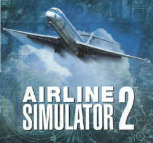

TEST:
AIRLINE SIMULATOR2
von Matthias Lieberecht und Felix Dudek
Einführung
Der Airline Simulator von Nomisoft (Vertrieb durch
Simaviator) ist ein Flugsimulator, der zwischen FS98 bzw.
FLY! und einem Verfahrenstrainer angesiedelt ist. Als
reinem FS98 / FLY! Flieger fällt es einem daher schwer,
den AS2 objektiv zu betrachten. Wenn man sich aber eine
gewisse Zeit mit dem Programm beschäftigt, erkennt man
seinen Nutzen.
 Die
Geschichte von AS2 liest sich wie ein Husarenstück. Im
Grundmodell von einer Person entwickelt und programmiert,
unzeitgemäße Grafik gepaart mit bahnbrechendem
Realismus, hochwertiger Inhalt zum hochwertigen Preis,
zigmal verschobener Release-Termin und letztendlich dem
AS2 beiliegende 3D-Brillen, die der Entwickler Simon
Hradecky damals zu Tausenden in seinem Keller liegen
hatte, aber Platz für ein neues Weinregal schaffen
wollte. Was lag also näher, als die Brillen mitsamt extra
dafür programmierten 3D-Modus dem AS2 beizulegen? Schön,
daß es noch so etwas Gutes gibt, höre ich jetzt
Dallmaier Prodomo sagen.
Die
Geschichte von AS2 liest sich wie ein Husarenstück. Im
Grundmodell von einer Person entwickelt und programmiert,
unzeitgemäße Grafik gepaart mit bahnbrechendem
Realismus, hochwertiger Inhalt zum hochwertigen Preis,
zigmal verschobener Release-Termin und letztendlich dem
AS2 beiliegende 3D-Brillen, die der Entwickler Simon
Hradecky damals zu Tausenden in seinem Keller liegen
hatte, aber Platz für ein neues Weinregal schaffen
wollte. Was lag also näher, als die Brillen mitsamt extra
dafür programmierten 3D-Modus dem AS2 beizulegen? Schön,
daß es noch so etwas Gutes gibt, höre ich jetzt
Dallmaier Prodomo sagen.
Dass der Airline Simulator, unter Fans auch liebevoll AiSi
genannt, ein schwerer Brocken ist, daran lässt schon die
hübsche Verpackung keinen Zweifel. "Wichtiger
Hinweis - Airline Simulator 2 ist ein äußerst
detailliertes Flugsimulationserlebnis. Nur für erfahrene
Piloten geeignet!" Diese Formulierung ist
unglücklich gewählt, da es auch Piloten gibt, die wenig
erfahren sind, aber den AS2 dazu nutzen, sich tiefer in
die Materie einzuarbeiten. Auch mit Grundkenntnissen kann
man im AS2 schon viel bewegen, das Handbuch hilft später
über bestehende Lücken hinweg. Letztlich also ein
Simulator für Piloten mit Erfahrung und solche, die diese
sammeln wollen.
 Der
Airline Simulator 2 ist im Grunde genommen eine
Weiterentwicklung des alten und inzwischen eingestellten
ATP (Airline Transport Pilot). Der ATP war weniger für
den Sichtflug oder für grafische Kapriolen gedacht,
vielmehr hatte man einen Verfahrenstrainer für größere
Maschinen im Sinn. Angedacht wurde damals auch ein
Flugzeugeditor, der die mickrige Anzahl der Maschinen des
ATP auf ein beträchtliches Maß erhöhen sollte. Das
Projekt wurde jedoch völlig aufgegeben zugunsten des
stark verbesserten Airline Simulators. Dieser enthielt
dann letztendlich auch die Flugzeuge, die im ATP
gewünscht wurden.
Der
Airline Simulator 2 ist im Grunde genommen eine
Weiterentwicklung des alten und inzwischen eingestellten
ATP (Airline Transport Pilot). Der ATP war weniger für
den Sichtflug oder für grafische Kapriolen gedacht,
vielmehr hatte man einen Verfahrenstrainer für größere
Maschinen im Sinn. Angedacht wurde damals auch ein
Flugzeugeditor, der die mickrige Anzahl der Maschinen des
ATP auf ein beträchtliches Maß erhöhen sollte. Das
Projekt wurde jedoch völlig aufgegeben zugunsten des
stark verbesserten Airline Simulators. Dieser enthielt
dann letztendlich auch die Flugzeuge, die im ATP
gewünscht wurden.
Doch Simon Hradecky wollte mehr. Wirklichkeitsgetreue
Flugmodelle, Wettereffekte, erweiterte Cockpits, größere
Landschaftsgebiete, um schließlich einen fast perfekten
Simulator zu schaffen, der sich, mit den bekannten
Ausnahmen, kaum von den großen Vorbildern unterscheiden
sollte. Nach mehrmonatiger Verzögerung bei Produktion und
Auslieferung konnte man endlich nach dreijähriger
Entwicklungszeit Anfang August den AS2 in Augenschein
nehmen. Und es scheint, als kann AS2 die hochgesteckten
Ziele erreichen.
 Gut
gepackt ist halb gewonnen
Gut
gepackt ist halb gewonnen
Das öffnen der Verpackung gerät zu einer wahren
Freude oder vielmehr das, was man darin findet. Sofort
fallen die absolut hochwertigen Checklisten für MD83/88
und die 747 auf. Darunter finden sich drei Enroute Charts
sowie satte 150 Airport- und ILS-Charts der britischen
Kartenfirma Aerad. Des weiteren ein komplexes Handbuch (in
Englisch!!) mit Ringbindung, auch hier überzeugt Klarheit
und Verarbeitung.
Bei den Handbüchern bin ich aber bereits bei meinem
ersten Kritikpunkt angekommen. Während das englische
Handbuch recht ordentlich aussieht, ist das Deutsche
absolut mangelhaft. Es handelt sich dabei eher um eine
kleine Ansammlung der wichtigsten Befehle. Trotzdem
gehören meiner Meinung nach beide Handbücher
überarbeitet. Warum ich mich bei dieser Aussage auch auf
das Englische beziehe, geht aus den nachfolgenden
Erläuterungen noch hervor.
 Ein
nettes Gimmick ist die beiliegende 3D-Brille, die locker
den Blues Brothers entstammen könnte. Allerdings ist der
Nutzen ziemlich beschränkt, denn es bedarf mindestens
einer halben Stunde, bis man sich mit ihr an den 3D-Modus
des AS2 gewöhnt hat, aber spätestens nach 15 Minuten
bekommt man von dem grünen Himmel und der roten Erde
Kopfschmerzen und es begehrt danach liebevoller Betreuung
durch die schöne Gattin oder einer schmackhaften Aspirin.
Ein
nettes Gimmick ist die beiliegende 3D-Brille, die locker
den Blues Brothers entstammen könnte. Allerdings ist der
Nutzen ziemlich beschränkt, denn es bedarf mindestens
einer halben Stunde, bis man sich mit ihr an den 3D-Modus
des AS2 gewöhnt hat, aber spätestens nach 15 Minuten
bekommt man von dem grünen Himmel und der roten Erde
Kopfschmerzen und es begehrt danach liebevoller Betreuung
durch die schöne Gattin oder einer schmackhaften Aspirin.
Nomisoft hat erkannt, daß Speicherplatz immer mehr ein
Thema wird und bietet daher die schöne Möglichkeit, das
Programm ohne Installation auf Festplatte direkt von der
CD zu starten. Dies ist sehr sinnvoll, auch wenn man
dadurch nicht in der Lage ist, Einstellungen, wie z.B.
Joystickempfindlichkeiten, abzuspeichern. Diese müssen
somit stets von Neuem eingegeben werden.
 FS
4 lässt grüßen
FS
4 lässt grüßen
Die Szeneryqualität entspricht der eines
Verfahrenstrainers. Dass die Grafik des AS2 milde gesagt
unmodern ist, daran ließ Simon Hradecky keinen Zweifel.
Man bemerkt recht schnell, daß AS2 zum Flugtraining
erstellt wurde und nicht zum Betrachten schöner Szenerien.
Wer also Wert auf schöne Landschaften legt, ist mit AS2
absolut falsch bedient. Es waren aber auch nie
ausgeklügelte Szenerien und schöne Landschaften geplant.
Grobe Pyramidenberge, klotzige Terminals und simple
Flugzeuggrafik sind somit an der Tagesordnung. Städte
präsentieren sich als große graue Kleckse in der
Landschaft, Straßen und Flüsse knicken rechtwinklig ab.
Was vielleicht bei jedem anderen Simulator ein Argument
zum Nichtkauf wäre, erzeugt beim AS2 nur gleichgültiges
Schulterzucken. Im Vordergrund steht die Bedienung des
Flugzeuges und seiner Systeme und nicht das Betrachten
spektakulärer Szeneriegebiete. Wer also Wert auf schöne
Landschaften legt, ist mit dem AS2 absolut falsch bedient.
Etwas detaillierter fallen die Airports aus, neben
Taxiway-Markierungen, Taxilines, Passagierbrücken und
kleineren Extras finden sich ab und an einige statische
Flieger - man ist also nicht ganz alleine. Eine dynamische
Szenerie darf man freilich nicht erwarten.
 Was
tut sich nach dem Programmstart
Was
tut sich nach dem Programmstart
Nach dem Aufrufen des Programms startet AS2 mit einem
Demoflug, den man sich auf jeden Fall einmal ansehen
sollte. Nachteil dieses Demofluges ist, dass man keinen
Eingriff auf das Geschehen nehmen kann. Schade finde ich
auch, daß es nicht einmal möglich ist, z.B. auf die
Mittelkonsole des Panels zu wechseln. Mit der ESC Taste
kann das Demo zu jedem beliebigen Zeitpunkt abgebrochen
werden.
Die jeweiligen Funktionen des Programms lassen sich
über die Tasten F1 bis F10 aufrufen. Mit F1 kann z.B. ein
neuer Flug gestartet werden. Dabei bietet der "Auto
Flight" eine gute Alternative zu dem bereits
beschriebenen Demoflug. Bei diesem Flug läßt sich ein
Start und Zielflughafen auswählen. Danach fliegt die
Maschine die vorgegeben Route mit allen erforderlichen ATC
Anweisungen ab, ohne daß man selbst Hand anlegen muß.
Der Vorteil gegenüber dem Demoflug besteht darin, daß
hier Eingriff auf das Geschehen genommen werden kann.
Ebenso lassen sich die Cockpitfenster umschalten. Kennt
man sich z.B. mit den Elementen des MD FGS nicht gut aus
(ich habe hier zum Glück MadDog Erfahrung <g>),
kann man diesen Auto Flug auch als Lernvideo sehen.
 Ähnlich
aufgebaut ist der "Single Assignment". Hier
läßt sich ebenfalls der Start- und Zielflughafen frei
bestimmen, mit dem Unterschied, daß der Flug selbst
durchgeführt werden muß. Das Ganze gleicht einem
Adventure, welches durchweg ATC unterstützt ist. Das
deutsche und englische Handbuch verweist hierzu auf
Kapitel 7, welches aber in keinem der Handbücher
vorhanden ist! Etwas ATC Erfahrung ist also erforderlich,
um nicht, bis in alle Ewigkeit, am Hangar zu stehen. Hilfe
bietet das englische Handbuch unter "Your career with
AS 2". Vermutlich sollte dies einmal Kapitel 7 geben.
Hier sind einige der Anweisungen recht gut beschrieben.
Die jeweils erforderlichen Frequenzen gehen dabei aus den
Approach Charts hervor und sind von der Reihenfolge der
jeweiligen Einstellung sehr realistisch aufgebaut. So muß
z.B. zuerst ATIS abgehört werden, bevor die Ground
Frequenz eingestellt wird. Ebenso wissen muß man, daß
nach dem Rollen zur Landebahn die Tower Frequenz
eingestellt wird. Alle weiteren erforderlichen Frequenzen
werden durchgegeben. Warum allerdings beim Demoflug
Frankfurt - Salzburg Amsterdam Information eingestellt
wird, bleibt schleierhaft. Anweisungen, auch diese zum
Frequenzwechsel, müssen stets mit Strg-Enter bestätigt
werden, was einer realen Wiederholung entspricht. Nach
durchgeführtem Flug bekommt man die "Flight
Performance". Das ist eine Einzelauswertung der
jeweiligen Schritte des Fluges, bei der auch Fehler recht
genau beschrieben sind. Die Einzelpunkte sind ebenfalls
unter "Your career with AS 2" beschrieben.
Ähnlich
aufgebaut ist der "Single Assignment". Hier
läßt sich ebenfalls der Start- und Zielflughafen frei
bestimmen, mit dem Unterschied, daß der Flug selbst
durchgeführt werden muß. Das Ganze gleicht einem
Adventure, welches durchweg ATC unterstützt ist. Das
deutsche und englische Handbuch verweist hierzu auf
Kapitel 7, welches aber in keinem der Handbücher
vorhanden ist! Etwas ATC Erfahrung ist also erforderlich,
um nicht, bis in alle Ewigkeit, am Hangar zu stehen. Hilfe
bietet das englische Handbuch unter "Your career with
AS 2". Vermutlich sollte dies einmal Kapitel 7 geben.
Hier sind einige der Anweisungen recht gut beschrieben.
Die jeweils erforderlichen Frequenzen gehen dabei aus den
Approach Charts hervor und sind von der Reihenfolge der
jeweiligen Einstellung sehr realistisch aufgebaut. So muß
z.B. zuerst ATIS abgehört werden, bevor die Ground
Frequenz eingestellt wird. Ebenso wissen muß man, daß
nach dem Rollen zur Landebahn die Tower Frequenz
eingestellt wird. Alle weiteren erforderlichen Frequenzen
werden durchgegeben. Warum allerdings beim Demoflug
Frankfurt - Salzburg Amsterdam Information eingestellt
wird, bleibt schleierhaft. Anweisungen, auch diese zum
Frequenzwechsel, müssen stets mit Strg-Enter bestätigt
werden, was einer realen Wiederholung entspricht. Nach
durchgeführtem Flug bekommt man die "Flight
Performance". Das ist eine Einzelauswertung der
jeweiligen Schritte des Fluges, bei der auch Fehler recht
genau beschrieben sind. Die Einzelpunkte sind ebenfalls
unter "Your career with AS 2" beschrieben.
Eine besondere Zugabe ist der "Career Assignment".
Mit dieser Option läßt sich eine Ausbildungskarriere zum
Berufspiloten starten. Hierzu ist es aber erforderlich,
das Programm auf Festplatte zu speichern.
 Welche
Flugzeuge bietet AS2
Welche
Flugzeuge bietet AS2
Neben älteren ATP Modellen, wie B737, B767, B747-300,
A320 und Shorts 360 gibt es die neuen Modelle MD-83, MD-88
und B747-400. Die älteren Modelle weisen jedoch nicht
alle realitätsnahen Funktionen der neuen Modelle auf,
daher sollten die neuen Flugzeuge bevorzugt werden. Hierzu
finden sich auch recht gute Beschreibungen im englischen
Handbuch. Da AS2 Weight and Balance Berechnungen
unterstützt, finden sich im Handbuch auch ausführliche
Berechnungstabellen beider Modelle.
Die Cockpits der Flugzeuge bestehen jeweils aus zwei
getrennten Fenstern. Mit der Tab Taste wird zwischen
Pilotensicht und dem mittleren Instrumentenbereich
gewechselt. Ein Einblenden beider Fenster ist nicht
möglich und würde aufgrund der Größe auch keinen Sinn
machen. Schwierig wird es aber bei einem manuellen
Steigflug, wenn man zur mittleren Konsole umschaltet (z.B.
zum Wechseln der Frequenz), da nun die primären
Instrumente, wie z.B. VSI, Airspeed, usw. außer Sicht
sind.
Das Flugverhalten der neuen Flugzeuge ist sehr gut.
Sämtliche eingestellten Werte, wie z.B. Speed-Hold beim
Autopiloten, werden perfekt umgesetzt. Es lassen sich auch
Notfallsituationen, wie z.B. Triebwerksausfall,
Fahrwerksdefekt, usw. wunderbar simulieren. Eine
strukturelle Beschädigung des Flugzeuges durch z.B. zu
hohe G-Kräfte wird ebenfalls dargestellt. Die Maschine
reagiert auch sofort darauf. Selbstverständlich erkennt
das Flugzeug auch vereiste und nasse Taxiways und
Landebahnen. Eine entsprechende Steuerung des Flugzeuges
wird dann erforderlich.
 Ebenfalls
realistisch umgesetzt wurde der Flight Management
Computer. Hier lassen sich komplette Routen programmieren.
In der 747-400 wird zusätzlich noch Steig- und Sinkrate
unterstützt. Die korrekte Programmierung setzt aber
einige Kenntnisse über das Flugzeug voraus, die dem
englischen Handbuch entnommen werden können.
Ausweichflughäfen können aber nicht problemlos
programmiert werden. Werden diese, z.B. aufgrund
geänderter Wetterbedingungen eingegeben, löscht das FMS
diverse Waypoints.
Ebenfalls
realistisch umgesetzt wurde der Flight Management
Computer. Hier lassen sich komplette Routen programmieren.
In der 747-400 wird zusätzlich noch Steig- und Sinkrate
unterstützt. Die korrekte Programmierung setzt aber
einige Kenntnisse über das Flugzeug voraus, die dem
englischen Handbuch entnommen werden können.
Ausweichflughäfen können aber nicht problemlos
programmiert werden. Werden diese, z.B. aufgrund
geänderter Wetterbedingungen eingegeben, löscht das FMS
diverse Waypoints.
Was mir persönlich nicht so gut gefällt, ist die
Umsetzung der Bedienelemente des Cockpits. Ob nun ein
Knopf gedrückt ist oder nicht, sieht man diesem leider
nicht an. Ebenfalls recht umständlich ist die HDG- oder
Altitude Übergabe des Autopiloten. Hier kommt man um ein
Studium der Tastaturbelegung nicht herum, da diese
Funktion nur durch Tastaturkommandos ausgeführt werden
kann. Andere Funktionen, wie z.B. das Einstellen des
Kurses oder der gewünschten Flughöhe, lassen sich mit
der Maus vornehmen. Joysticks werden zwar unterstützt,
müssen aber bei jedem Programmstart durch die
Tastenkombination Alt-J aktiviert werden.
 Wenn
zwei sich streiten
Wenn
zwei sich streiten
Wie bereits erwähnt ist der AS2 ein recht komplexer
Simulator. Was kommt denn nun dabei raus, wenn sich gleich
zwei Reviewer über dieses Programm unterhalten:
Bitte hier lesen: IM
GESPRÄCH
Optionsvielfalt
Für wen ist denn nun der AS2 geeignet? Wie oben
bereits erwähnt, ist der AS2 kein Ausweichprodukt zum
Flugsimulator von Microsoft. Er darf auch nicht mit diesem
verglichen werden. Hierzu war der AS2 aber auch nie
gedacht. Das Programm ist geeignet für all diejenigen,
die Wert auf realistisches Flugverhalten legen und denen
dabei die Szenery oder der optische Eindruck des Panels
egal ist. Kurz gesagt, eigentlich für Personen, die einen
günstigen Verfahrenstrainer suchen.
Wer
im FS 98 damit prahlen kann, dass er noch jede Maschine
heil nach unten gebracht hat, sollte beim AS2 den Mund
nicht ganz so voll nehmen.
ATIS abhören, Abhebe -und Landegeschwindigkeit berechnen,
Clearance einholen, ATC-Anweisungen befolgen, stabile
Fluglage herstellen und halten, Warteschleifen einplanen,
um nur einige Punkte zu nennen: das alles macht den AS2 so
interessant.
Matthias Lieberecht und Felix Dudek
03.Oktober 1999


{kind=link}
{kind=link}